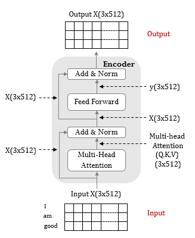
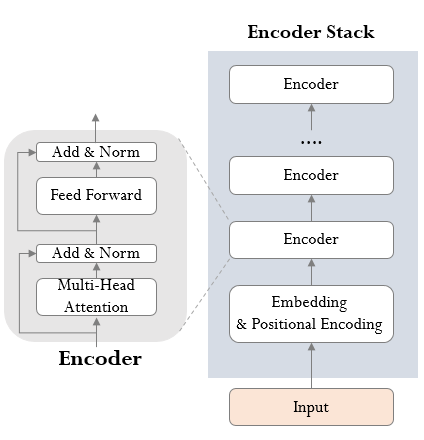
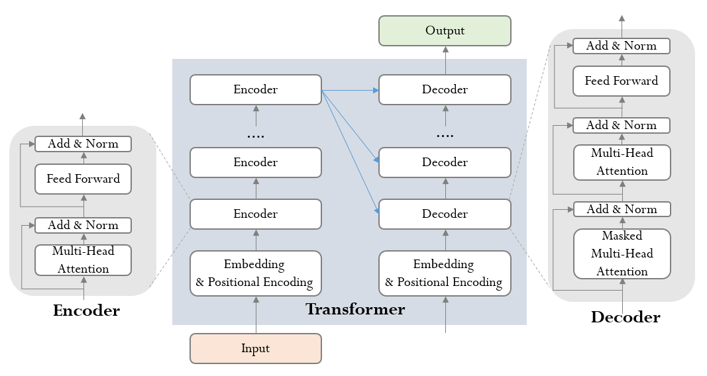

[논문 리뷰] Attention Is All You Need[1]: Transformer의 Encoder, Decoder
자연어 분야의 핵심 논문 중 하나인 Attention Is All You Need을 리뷰한다. 어텐션 알고리즘과 모델 아키택처를 그림과 코드를 통해 이해하고, 병렬성 관점에서 살펴본다.
#NLP#Paper
Abstract
이 논문은 기계 번역 및 자연어 처리 분야에서 새로운 neural network 아키텍처인 "Transformer"를 제안한다. 기존의 순환 신경망(RNN) 또는 컨볼루션 신경망(CNN)과 달리 Transformer는 전적으로 어텐션 메커니즘에 기반한다.
주요 내용:
기존 모델은 복잡한 RNN 또는 CNN 기반 인코더-디코더 구조를 사용했지만, Transformer는 어텐션 메커니즘만으로 구성된다.
Transformer는 병렬화가 가능하고 학습 시간도 크게 단축할 수 있다.
실험 결과, Transformer 모델이 WMT 2014 영어-독일어, 영어-프랑스어 번역 테스크에서 기존 최고 모델보다 높은 BLEU 점수를 기록했다.
Background
이 부분은 Transformer 모델이 기존 sequence-to-sequence 모델들과 다른 점을 설명하고 있다:
| 특성 | 기존 모델 | Transformer |
|---|---|---|
| 기본 구조 | Convolutional Neural Networks (CNNs) | Self-attention |
| 연산 병렬화 | CNN 기반 | Self-attention 기반 |
| 멀리 떨어진 위치 간의 의존성 학습 | 어려움 (거리의 증가에 따라 연산량 증가) | Multi-Head Attention으로 해결 |
| 장점 | N/A | 위치 간 의존성을 효율적으로 계산하여 한계 극복 |
| 단점 | N/A | 위치 가중치 평균화로 인한 해상도 감소 문제 발생 |
Model Architecture
대부분의 최신 시퀀스 변환 모델은 인코더-디코더 구조를 따른다. 인코더는 입력 시퀀스 $(x1,...,xn)$ 를 연속된 표현 $z = (z1,...,zn)$들로 매핑하고, 디코더는 이를 바탕으로 출력 시퀀스 $(y1,...,ym)$ 를 생성한다.
Auto-regressive (자기 회귀 모형): Time t 시계열(시퀀스)을 예측할 때 predictor로 t-1 데이터를 활용하는 모델. 디코더는 이전에 생성된 출력 심볼들을 추가 입력으로 사용하여 다음 심볼을 생성한다.
트랜스포머도 위 과정을 stacked self-attention과 point-wise & fully connected layer를 사용하여 해결한다.
Encoder and Decoder Stacks
인코더


- 구조
- 6개의 인코더 레이어로 구성
- 각 인코더 레이어는 2개의 서브레이어(muti-head self attention, fully-connected feed-forward)로 이루어짐
- 각 서브 레이어에 잔차 연결과 레이어 정규화가 있음: stack 구조로 인한 그래디언트 소실 방지
- 모든 서브 레이어의 출력 차원은 d_model(default=512) 값으로 고정
- 입력, 출력
- 인풋은 해석하고자 하는 문장 정보
- 임베딩된 인풋 문장에서 Q, K, V 특성을 추출한 후, 이에 Multi-Head Attention을 적용해 문장에 대한 해석 정보가 담긴 매트릭스를 생성 (마치 seq2seq에서 context vector를 생성하듯)
class Encoder(nn.Module):
def __init__(self, num_layers, d_model, num_heads, d_ff, input_vocab_size, max_len, dropout=0.1):
super(Encoder, self).__init__()
self.d_model = d_model
self.embedding = nn.Embedding(input_vocab_size, d_model)
self.pos_encoding = PositionalEncoding(d_model, dropout, max_len)
self.layers = nn.ModuleList([EncoderLayer(d_model, num_heads, d_ff, dropout) for _ in range(num_layers)])
def forward(self, src, src_mask):
x = self.embedding(src) * torch.sqrt(torch.tensor(self.d_model).float())
x = self.pos_encoding(x)
for layer in self.layers:
x = layer(x, src_mask)
return x
class EncoderLayer(nn.Module):
def __init__(self, d_model, num_heads, d_ff, dropout=0.1):
super(EncoderLayer, self).__init__()
self.multihead_attention = MultiHeadAttention(d_model, num_heads)
self.positionwise_feedforward = PositionwiseFeedforward(d_model, d_ff)
self.dropout = nn.Dropout(dropout)
self.layer_norm1 = nn.LayerNorm(d_model)
self.layer_norm2 = nn.LayerNorm(d_model)
def forward(self, src, src_mask):
x = src
# Multi-Head Attention
x = self.layer_norm1(x + self._sa_block(x, src_mask, src_key_padding_mask, is_causal=is_causal)) # (query, key, value)
# Positionwise Feedforward
x = self.layer_norm2(x + self._ff_block(x))
return x디코더

구조
- 인코더와 마찬가지로 6개의 디코더 레이어로 구성
- 각 디코더 레이어는 3개의 서브레이어(Maksed muti-head self attention, Encoder-Decoder attention, fully-connected feed-forward)로 이루어짐
- 셀프 어텐션 레이어에서 위치 i에 대한 예측이 i보다 작은 위치의 알려진 출력에만 의존하도록 마스킹 처리
- 각 서브레이어의 출력에 잔차 연결과 레이어 정규화가 있음
입력, 출력
- 인풋은 디코더 자신의 생성 토큰을 순차적으로 입력, 최초엔 SOS 토큰(start-of-sentence)을 활용
- 이후 임베딩된 단어 인풋에 Multi-Head Attention 을 적용
- Encoder 와 다른 점은 이 Multi-Head Attention 의 아웃풋이 해석 정보를 가진 매트릭스가 아닌 Q, 즉 인풋 단어에 대한 복수의 질문 정보를 담은 매트릭스라는 점
- 인코더-디코더 어텐션 레이어(2번째 레이어)에서 인코더의 최종 출력 값을 K, V로 사용
class Decoder(nn.Module):
def __init__(self, num_layers, d_model, num_heads, d_ff, output_vocab_size, max_len, dropout=0.1):
super(Decoder, self).__init__()
self.d_model = d_model
self.embedding = nn.Embedding(output_vocab_size, d_model)
self.pos_encoding = PositionalEncoding(d_model, dropout, max_len)
self.layers = nn.ModuleList([DecoderLayer(d_model, num_heads, d_ff, dropout) for _ in range(num_layers)])
self.fc_out = nn.Linear(d_model, output_vocab_size)
def forward(self, tgt, memory, tgt_mask, memory_mask):
x = self.embedding(tgt) * torch.sqrt(torch.tensor(self.d_model).float())
x = self.pos_encoding(x)
for layer in self.layers:
x = layer(x, memory, tgt_mask, memory_mask)
x = self.fc_out(x)
return x
class DecoderLayer(nn.Module):
def __init__(self, d_model, num_heads, d_ff, dropout=0.1):
super(DecoderLayer, self).__init__()
self.masked_multihead_attention = MultiHeadAttention(d_model, num_heads)
self.encoder_decoder_attention = MultiHeadAttention(d_model, num_heads)
self.positionwise_feedforward = PositionwiseFeedforward(d_model, d_ff)
self.dropout = nn.Dropout(dropout)
self.layer_norm1 = nn.LayerNorm(d_model)
self.layer_norm2 = nn.LayerNorm(d_model)
self.layer_norm3 = nn.LayerNorm(d_model)
def forward(self, tgt, memory, tgt_mask, memory_mask):
x = tgt
# Masked Multi-Head Attention (Self-Attention)
x = self.layer_norm1(x + self._sa_block(x, tgt_mask, tgt_key_padding_mask, tgt_is_causal))
# Encoder-Decoder Attention
x = self.layer_norm2(x + self._mha_block(x, memory, memory_mask, memory_key_padding_mask, memory_is_causal)) # memory는 encoder의 결과 값
# Positionwise Feedforward
x = self.layer_norm3(x + self._ff_block(x))
return x